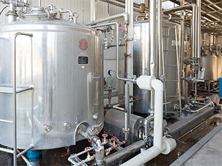
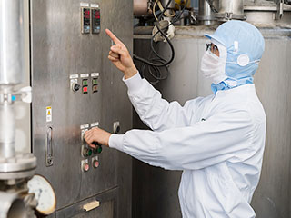
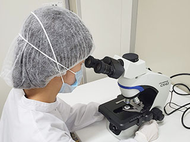
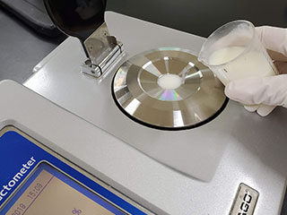
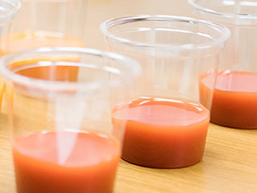
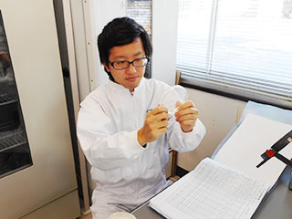
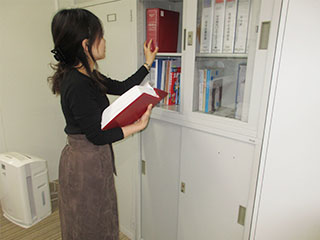

Work
仕事紹介
安曇野食品工房の仕事内容をご紹介します。「自分だったらここかな」と是非働く姿を想像してみてください。
安曇野食品工房の仕事内容をご紹介します。「自分だったらここかな」と 是非働く姿を想像してみてください。
01 生産技術
- 仕事内容
- 現在、飲料ラインの調合現場と包装現場で作業をしています。 調合現場では、作る製品の配合表に従ってタンクに原料などを入れていき、製品の元となる調合液を作成 します。調合液を作る際は、調合手順や温度、時間を考慮しながら作業を行っています。
- この仕事の面白さ
- 何気なく口にしている物がどのような工程で出来上がっていくのかを知ることができ、自分が作ったものを誰かが購入して食べてくれているという事実にやりがいを感じます。 店頭に並んでいる商品の賞味期限を見て「あのとき作った商品だ」と思えることが嬉しいです。 そして人の健康に直結する、食品を扱う責任の重さを感じます。 工場ではいろいろな方が働いているので、幅広い世代の方との交流から視野が広がり、自らの成長を実感できることがあります。 また、計画どおりスムーズに生産ラインが動くと、やりがいに繋がります。


02 商品開発研究所
- 仕事内容
- マーケティング部からコンセプトをもとに商品作成の依頼が来ますのでイメージに合う味や食感、色になるよう配合を組み立てていきます。配合設計では様々な原料を確認し配合比率を調整していきます。 また、試作したものが工場で上手く製造できるか、しっかり商品として世に送り出せるかを工場と確認していきます。製造工程を一つひとつ確認し製造上、微生物、官能で問題がないか最後まで確認をするのが一連の仕事内容です。
- この仕事の面白さ
- イメージした味や見た目通りに商品が作られる現場に携われることです。 試作をしている際は予想もしなかったことが起こることもあり日々、新しいことが勉強できる環境です。 原料一つとってもどのように作られているか、何と組み合わせるとどのような風味になるかなど、自分の知らない未知のことがいくつもあることに触れられるのが面白いです。


03 品質管理
- 仕事内容
- 品質管理室の仕事は製品の品質を保つことです。 製品や製造工程に問題がないか日々確認し、問題を未然に防いでいます。 工場の人と連携して品質管理の中心を担うのが主な仕事ですがお客様からのクレーム対応や取引先からの監査の対応などもするため、工場外の人とやり取りする機会が多い仕事でもあります。
- この仕事の面白さ
- 食品や工場の知識はもちろん必要ですが、品質管理は菌や虫などとも向き合わなければいけません。 生物系の大学出身者としては、逆に面白く感じる時もあります。 またトラブルの種類は多種多様で、仕事は変化に富んでおり大変ではありますが、新たな発見が多いです。


04 品質保証室
- 品質保証室
- 品質保証室は商品の品質について統括・管理・運営していくのが主な仕事です。 お客様に「安心」「安全」で高品質な商品をお届けするための仕組みを構築し、それらの仕組みが適切に運用されていることを確認するために製造現場の監査や書類の確認を行っています。
- この仕事の面白さ
- 商品の品質に対して重要な役割を担っているため、商品の企画段階からお客様が商品を召し上がった後のご意見まで幅広く携われるところです。
